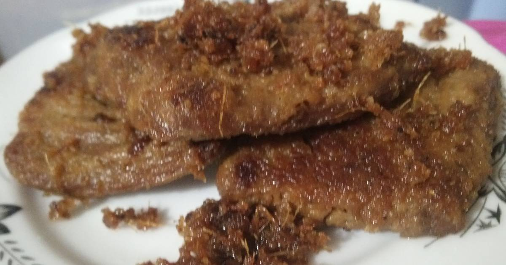

Gepuk

Src: cookpad.com
Empal gepuk adalah salah satu kuliner khas Sunda atau Jawa Barat yang terkenal. Tak jarang sajian ini dijadikan oleh-oleh Bandung.
Sejak dahulu, empal gepuk dipakai untuk persediaan makanan rumah tangga yang bisa dimakan secara berkala.
Daging empal gepuk saat itu juga lazim ditemukan dalam kegiatan-kegiatan spesial seperti kenduri atau selamatan.
Cara membuat empal gepuk
Bahan:
- 300 g daging sapi gandik, iris 1 cm
- 2 batang sera
- 150 ml air kaldu sapi
- 1 sdt Royco Kaldu Sapi
- 1/2 sdt gula
- 2 sdm minyak, untuk menumis
- 3 lembar daun salam
- 150 ml santan encer
- 2 sdm air gula jawa
- 2 sdm gula merah
- 2 sdm Bango Kecap Manis Light
Bumbu halus:
- 4 siung bawang putih
- 1 ruas lengkuas
- 1 sdm ketumbar butiran
- 8 butir bawang merah
- 3 butir kemiri, sangrai
- 1/2 sdt merica putih bubuk
Cara membuat:
-
Tumis bumbu halus bersama Royco Kaldu Sapi, serai dan daun salam hingga harum.
-
Masukkan daging, santan, dan kaldu. Didihkan, kemudian kecilkan api.
-
Tambahkan garam, gula dan Bango Kecap Manis. Masak hingga kuah menyusut setengahnya.
-
Angkat daging, dan pukul-pukul dengan ulekan hingga pipih.
-
Masukkan kembali daging ke panci dan masak kembali di dalam kuah hingga meresap dan surut.
-
Sajikan.
Src: masakapahariini.com
|